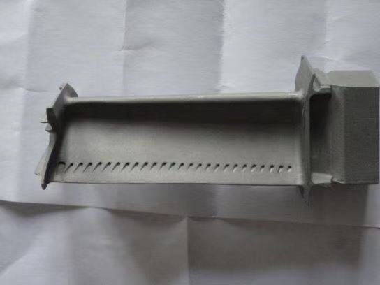
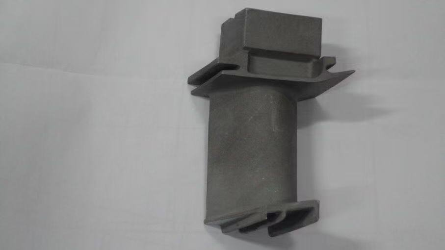
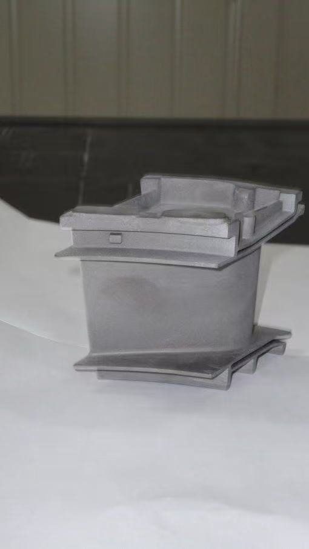

Gas turbine service and life extension
We work with operating fleets of industrial gas turbines, including GE, Siemens and Alstom units and their derivatives. The aim is to keep the machine running, substantiate life extension and reduce the total cost of ownership.

Engineering support throughout the operating life
Fleet condition assessment
Borescope inspection, instrumented checks, damage assessment, evaluation of the actual condition of the hot gas path and rotor.
Residual life assessment
Thermal state, creep and low-cycle fatigue analysis, life prediction for discs and blades based on actual equivalent operating hours.
Extension of overhaul intervals
Technically substantiated extension of overhaul and inspection intervals based on actual condition rather than scheduled operating hours alone.
Hot gas path restoration
Repair technology for rotor blades, nozzle guide vanes and combustors, coating restoration, qualification of repair shops and suppliers.
Reverse engineering
3D scanning and CT, rebuilding 3D models, production and repair documents for discontinued parts and assemblies, with a freedom-to-operate review.
Failure investigation
Establishing the cause of the failure, confirmation by analysis, corrective actions.
Installation, supervision, commissioning
Installation supervision and technical direction of site work, unit alignment, commissioning, acceptance test programmes and procedures.
Overhauls and spare parts
Repair documentation, special tooling design, supervision of the work, spare parts supply.
Engineering support for overhauls
ROTODYN is responsible for the engineering side of an overhaul, from the work scope to the life assessment.
| Stage | What ROTODYN provides |
|---|---|
| Before opening | Review of operating data and borescope results, work scope, list of spare parts and special tools. |
| Inspection | Defect list and a decision for each part: return to service, repair or replacement. |
| Repair | Repair documentation and restoration procedures, coating requirements, repair quality control. |
| Reassembly and start-up | Checks of clearances and alignment during reassembly, installation supervision, commissioning, acceptance test programme. |
| After the overhaul | Life substantiation by analysis, recommendations on the overhaul interval and inspection programme. |
Turbine blades and vanes



Over a machine's life, most of the revenue comes from service
Sources: Grand View Research, Gas Turbine Services Market, 2026; Siemens Energy Annual Report FY2025.
Tell us about your project
The first conversation is free of charge: one or two calls to understand the subject and the constraints. Then a technical proposal with scope, schedule and cost.